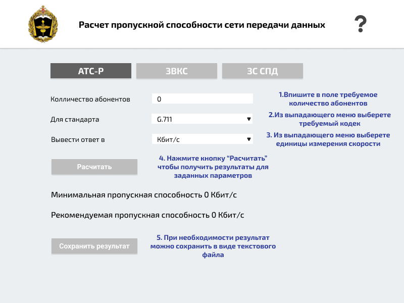
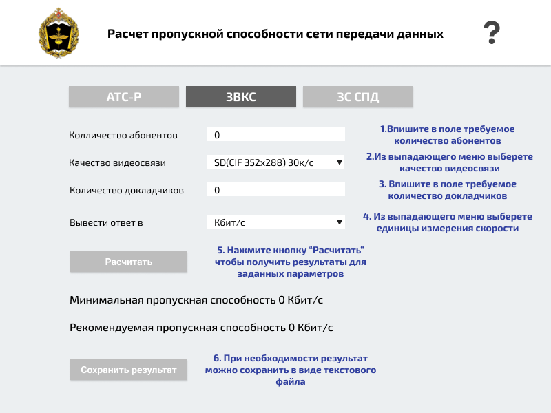
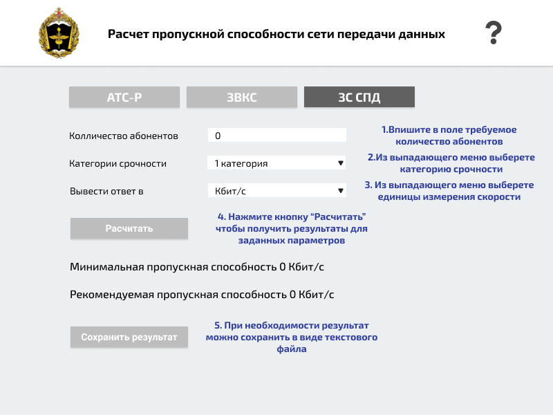

О программе
Программное средство «Расчет требуемой пропускной способности мультисервисной
сети» предназначено для расчета
минимальной и рекомендуемой пропускной способности мультисервисной сети для предоставления должностным лицам
услуг ЗВКС, ЗС СПД, АТС-Р требуемого качества с заданными вероятностно-временными характеристиками
посредством
организации соответствующих служб в интересах обеспечения информационной работы ДЛ ОВУ и информационного
взаимодействия в мирное и военное время.
Перейти в раздел:
Расчет пропускной способности услуги АТС-Р
Расчет пропускной способности услуги ЗВКС
Расчет пропускной способности услуги ЗС СПД
Расчет пропускной способности услуги АТС-Р
Для расчета пропускной способности введите предполагаемое количество абонентов АТС
и соответствующий аудиокодек:
- G.711 64 кбит/с
- G.728 16 кбит/с
- G.729 8 кбит/с

Расчет пропускной способности услуги ЗВКС
Для расчета пропускной способности сети введите количество участников конференции,
требуемое качество изображения: максимальное разрешение, количество кадров в секунду, количество
докладчиков( при наличии):
Таблица характеристик видеопотока на одного корреспондента
Качество
Мин.пр.сп.
Рек.пр.сп.
Частота кадров
Стандартная четкость (SD) (CIF 352x288)
64 кбит/с
128 кбит/с
25–30 кадров/c
SD (4 CIF 704x576)
128 кбит/с
512 кбит/с
25–30 кадров/c
Высокая четкость (HD) (720p 1280x720)
512 кбит/с
768 кбит/с
25–30 кадров/c
HD (720p 1280x720)
768 кбит/с
1.1 Мбит/с
50–60 кадров/c
HD (1080p 1920x1080p)
1 Мбит/с
1.5 Мбит/с
25–30 кадров/c
HD (1080p 1920x1080p)
2 Мбит/с
3 Мбит/с
50–60 кадров/c
Таблица характеристик видеопотока на одного докладчика
Качество
Мин.пр.сп.
Рек.пр.сп.
Частота кадров презентации
Стандартная четкость (SD) (CIF 352x288)
192 кбит/с
128 кбит/с
5-7 кадров/c
SD (4 CIF 704x576)
256 кбит/с
512 кбит/с
5-7 кадров/c
Высокая четкость (HD) (720p 1280x720)
768 кбит/с
768 кбит/с
10–15 кадров/c
HD (720p 1280x720)
1.1 Мбит/с
1.5 Мбит/с
10–15 кадров/c
HD (1080p 1920x1080p)
1.5 Мбит/с
2 Мбит/с
10–15 кадров/c
HD (1080p 1920x1080p)
2.5 Мбит/с
4 Мбит/с
25–30 кадров/c

Расчет пропускной способности услуги ЗС СПД
Для расчета пропускной способности сети введите предполагаемое количество
пользователей
услуги обмена электронной корреспонденцией, а также категорию срочности:
-
1 категория: максимальный размер сообщения до 100 байт,
максимальный срок доставки 10сек
-
2 категория: максимальный размер сообщения до 2048 кбайт,
максимальный срок доставки до 1 мин
-
3 категория: максимальный размер сообщения до 2048 кбайт,
максимальный срок доставки до 10 мин
